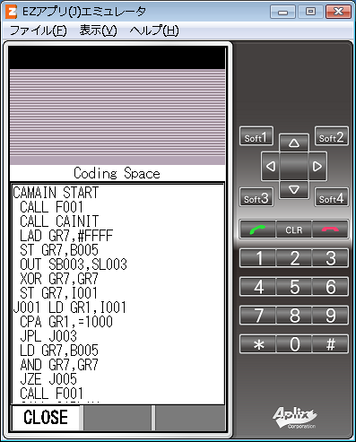
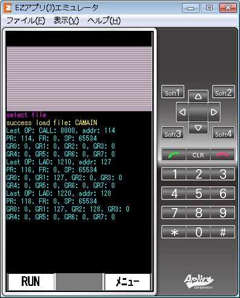
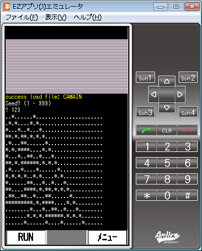

CASL2Comet2 on OAP
CASL2Comet2 on OAP v1.5
OpenAppli (MIDP2.0/CLDC1.1)
Download page (for au(KDDI) cell phone)
repository:
https://github.com/neetsdkasu/casl2comet2-on-oap
CASL2ソースコードをCOMET2シミュレータで実行するだけのアプリ
screenshots


